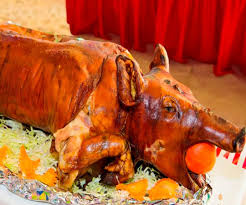
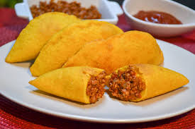

Explora la rica variedad de platos tradicionales de colombia, cada uno con su historia y sabor único.
Bandeja Paisa
La bandeja paisa es un plato tradicional colombiano, originario de la región de Antioquia. Es una comida abundante que incluye frijoles, arroz, carne molida, chicharrón, huevo frito, arepa, plátano maduro, aguacate y morcilla, todo servido en una gran bandeja. Es un símbolo de la cultura paisa y es conocido por su generosidad y variedad de ingredientes..
Lechona

La lechona es un plato típico colombiano, especialmente popular en el Tolima. Consiste en un cerdo asado, relleno con arroz, arvejas, y carne del mismo cerdo, sazonado con especias. Se cocina lentamente hasta que la piel del cerdo queda crujiente. Es un plato festivo, a menudo servido en celebraciones y eventos especiales.
Empanadas

Las empanadas en Colombia son una comida popular que consiste en una masa de maíz frita o al horno, rellena de una mezcla que puede incluir carne, papa, arroz, pollo, o queso, entre otros ingredientes. Son un aperitivo típico en todas las regiones del país, y se disfrutan en cualquier momento del día, a menudo acompañadas de ají o alguna otra salsa picante.